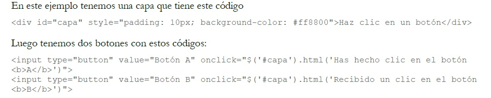

"JQUERY"
1. Introduccion
Que es JQuery?
Para simplificar, podríamos decir que jQuery es un framework Javascript, pero quizás muchos de los lectores se preguntarán
qué es un framework. Pues es un producto que sirve como base para la programación avanzada de aplicaciones, que aporta
una serie de funciones o códigos para realizar tareas habituales. Por decirlo de otra manera, framework son unas librerías de
código que contienen procesos o rutinas ya listos para usar. Los programadores utilizan los frameworks para no tener que
desarrollar ellos mismos las tareas más básicas, puesto que en el propio framework ya hay implementaciones que están
probadas, funcionan y no se necesitan volver a programar.

Figura 1 JQuery
2. Historia
jQuery es una biblioteca de JavaScript, creada inicialmente por John Resig, que permite simplificar la manera de interactuar con los documentos HTML, manipular
el árbol DOM, manejar eventos, desarrollar animaciones y agregar interacción con la técnica AJAX a páginas web. Fue presentada el 14 de enero de 2006 en el
BarCamp NYC. jQuery es la biblioteca de JavaScript más utilizada.
1
jQuery es software libre y de código abierto, posee un doble licenciamiento bajo la Licencia MIT y la Licencia Pública General de GNU v2, permitiendo su uso en
proyectos libres y privativos.2 jQuery, al igual que otras bibliotecas, ofrece una serie de funcionalidades basadas en JavaScript que de otra manera requerirían
de mucho más código, es decir, con las funciones propias de esta biblioteca se logran grandes resultados en menos tiempo y espacio.
Las empresas Microsoft y Nokia anunciaron que incluirán la biblioteca en sus plataformas.3 Microsoft la añadirá en su IDE Visual Studio4 y la usará junto con los
frameworks ASP.NET AJAX y ASP.NET MVC, mientras que Nokia los integrará con su plataforma Web Run-Time.
Figura 1.2 JQuery
3. Ventajas
La ventaja principal de jQuery es que es mucho más fácil que sus competidores. Usted puede agregar plugins fácilmente, traduciéndose esto en un ahorro
substancial de tiempo y esfuerzo. De hecho, una de las principales razones por la cual Resig y su equipo crearon jQuery fue para ganar tiempo (en el mundo de
desarrollo web, tiempo importa mucho).
La licencia open source de jQuery permite que la librería siempre cuente con soporte constante y rápido, publicándose actualizaciones de manera constante. La
comunidad jQuery es activa y sumamente trabajadora.
Otra ventaja de jQuery sobre sus competidores como Flash y puro CSS es su excelente integración con AJAX.
4. Desventajas
Una de las principales desventajas de jQuery es la gran cantidad de versiones publicadas en el corto tiempo. No importa si usted está corriendo la última versión
de jQuery, usted tendrá que hostear la librería usted mismo (y actualizarla constantemente), o descargar la librería desde Google (atractivo, pero puede traer
problemas de incompatibilidad con el código).
Además del problema de las versiones, otras desventajas que podemos mencionar:
jQuery es fácil de instalar y aprender, inicialmente. Pero no es tan fácil si lo comparamos con CSS
Si jQuery es implementado inapropiadamente como un Framework, el entorno de desarrollo se puede salir de control.
5. Requerimientos
Existen muchas maneras de empezar usando jQuery en un sitio web. Se puede:
Descargar la librería jQuery de jQuery.com
Incluir jQuery desde un CDN, como Google.
Al descargar jQuery existen dos versiones disponibles:
Version de producto, que ha sido comprimido y minimizado.
Versión de desarrollo, que se usa para testear y desarrollar (no comprimido)
Las dos versiones pueden ser descargadas de jQuery.com.
La librería jQuery es un simple archivo Javascript, y se puede hacer referencia a él mediante el tag HTML script.
Figura de codigo JQuery
6. Eventos/Codigos
Para empezar vamos a ver este ejemplo, donde tenemos dos botones y un texto.
Al pulsar un botón, cambiaremos el texto y
al pulsar el otro pondremos otro texto distinto.
Podemos ver el ejemplo en marcha en una página aparte.
En este ejemplo tenemos una capa que tiene este código

Figura 2 JQuery
Como se puede ver, en los botones hay definidos un par de eventos onclick (uno en cada uno) que ejecutan una instrucciónJavascript cuando se hace clic sobre ellos. La instrucción está en Javascript, pero hace uso de algunas herramientas
disponibles en jQuery para trabajo con los elementos de la página. En este caso, por explicarlo rápidamente, se hace una
selección del elemento DIV de la capa y luego se ejecuta un método sobre él para cambiar el contenido HTML del
elemento.
Crear la página con una capa, un enlace y la definición de una clase CSS
El primer paso sería construir una página con todos los elementos que queremos que formen parte de este primer ejemplo:
la capa DIV, el enlace y la definición de la class CSS.
Además, ahora también vamos a incluir el script de jQuery, que lo necesitaremos para acceder a las funciones del framework
Javascript.

Figura 2.1 JQuery